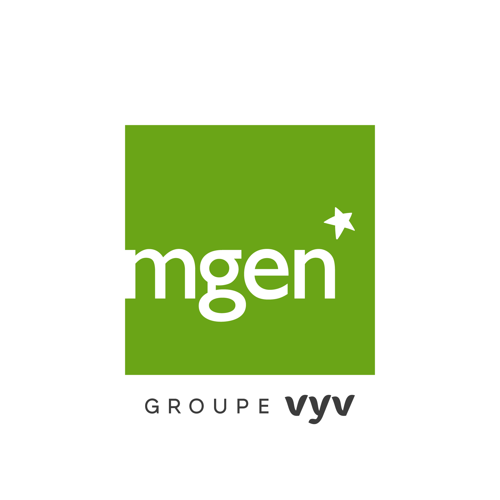
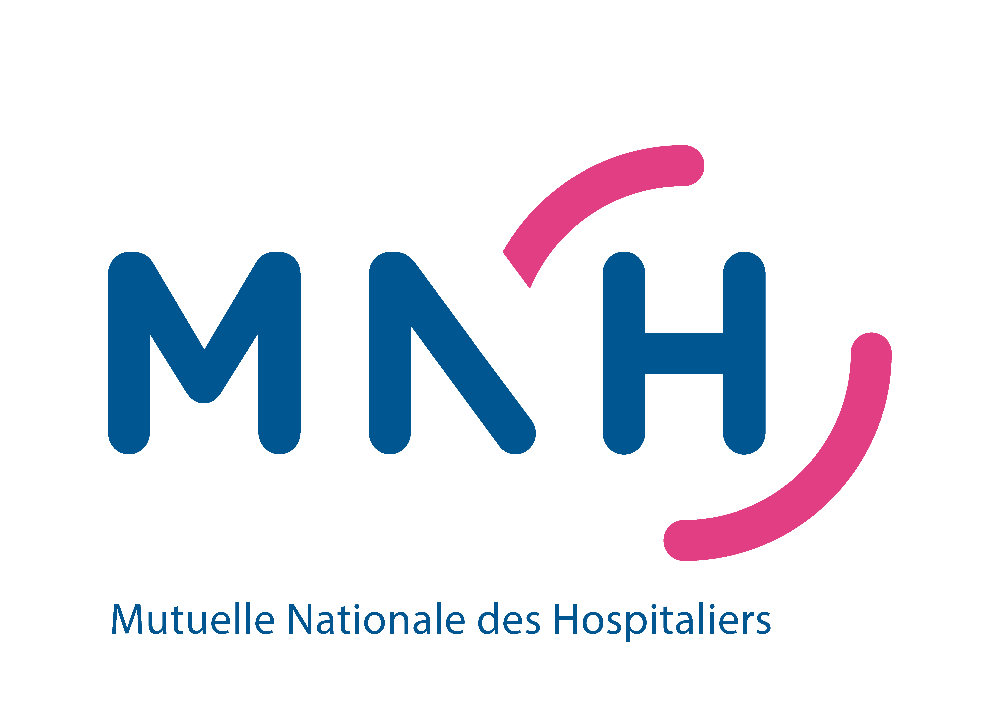
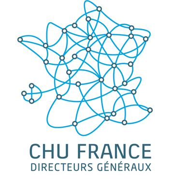

G-NI : L'IA Générative
Souveraine du CHU d'Angers.
Le Guide Numérique Intelligent est une plateforme maîtrisée, déjà en production, offrant une alternative sécurisée au "Shadow IT" pour les professionnels de santé.
Assistant G-NI
Modèle local souverain
Prix de l'Innovation soutenu par le jury :



Une réponse concrète aux enjeux hospitaliers
Souveraineté, Sécurité et Performance au service du soin et de l'administration.
Sécurité HDS / RGPD
Infrastructure certifiée HDS (OVHcloud) garantissant que les données de santé ne transitent jamais par des services tiers externes.
Lutte contre le Shadow IT
Offrir un outil institutionnel puissant pour éviter l'usage de solutions grand public non sécurisées par le personnel hospitalier.
Performance Métier
Automatisation des tâches chronophages pour redonner du temps aux soignants et administratifs du CHU.
4 Cas d'usage en production
RAG Documentaire
Interrogation intelligente des bases documentaires institutionnelles.
Agent Outlook
Aide à la synthèse de mails et rédaction de réponses types sécurisées.
Centre Anti-Poison
Support à l'identification de protocoles lors des gardes médicales.
Assistant DSN / IT
Aide au support utilisateur et résolution rapide d'incidents informatiques.
Architecture & Gouvernance
Une infrastructure robuste, sécurisée et entièrement maîtrisée par les équipes du CHU d'Angers.
Architecture Fonctionnelle
Interface & Orchestration
- Interface Web (OpenWebUI) : Gestion des conversations, historique et gestion des prompts.
- Orchestrateur IA (Ollama) : Sélection et appel des modèles.
Modules & Connectivité
- Modules complémentaires : Recherche internet privée, RAG, Outils métiers.
- API Interne : Intégration des LLM dans les agents autonomes et applications futures.
Gouvernance
Contrôle des accès, supervision, journalisation complète.
Architecture Technique
Infrastructure HDS
- Hébergement : HDS OVHcloud.
- Puissance : GPU dédié L4-180 (48Go VRAM).
Stack Logicielle (Docker)
- Conteneurs : OpenWebUI, Ollama, SearXNG, NGINX.
- Sécurité : Isolation réseau (Edge Firewall), HTTPS, clés SSH.
- Modèles : Open-weight quantifiés et interchangeables.
Souveraineté
Pas d’envoi de données externes, logs locaux auditables.
Méthodologie & Déploiement
Une approche incrémentale et sécurisée, de l'idée initiale à l'industrialisation massive.
Phase 1 — Prototype initial
- • Développement d’un premier POC sur PC portable.
- • Validation technique (OpenWebUI + Ollama).
- • Tests internes en circuit court.
Phase 2 — Expérimentation
Groupe restreint (6 utilisateurs)
- "Validation de l'ergonomie, pertinence pour la DSN, réglages de performance."
Phase 5 — Ouverture progressive
Priorité à la DSN, puis élargissement contrôlé.
Phase 6 — Amélioration continue
- • Feedback loop utilisateurs.
- • Déploiement RAG, Agent Mail, Assistant IT.
- • Constitution du catalogue LLM CHU.
Accompagnement des utilisateurs
Une dynamique d’adoption solide, structurée, et portée par un travail d’acculturation transversal dans l’établissement.
360+
Utilisateurs Actifs
Professionnels de santé, équipes administratives, cadres et fonctions support.
Usage quotidien pour la recherche d’information, la rédaction, l'analyse de documents et l'automatisation de processus répétitifs.
Sessions d'Acculturation
-
groups
Cadres de santé : Découverte des usages opérationnels.
-
badge
Ressources Humaines : Optimisation des processus et communication.
-
computer
DSN : Usage avancé et création d'agents autonomes.
-
science
DRCI : Aide méthodologique et rédaction scientifique.
-
campaign
Événements : Séminaire Jeunes Chercheurs & ateliers internes IA.
Support Continu (DSN)
-
build
Assistance technique et fonctionnelle au quotidien.
-
draw
Aide à la formulation experte des requêtes (Prompting).
-
architecture
Accompagnement terrain pour définir des cas d’usage adaptés aux métiers.
-
route
Passage progressif vers des agents autonomes ou intégrés directement aux SI.
Amélioration Continue
-
forum
Intégration systématique des retours et feedbacks utilisateurs.
-
library_add
Amélioration continue du catalogue des modèles d'IA.
-
tune
Ajustements réguliers de l’interface et des workflows.
-
low_priority
Priorisation des nouveaux cas d’usage selon les réels besoins du terrain.
-
menu_book
Mise à jour constante des guides et des bonnes pratiques d'utilisation.
Modèle Économique
Un investissement durable et prévisible, sans coût caché ni licence propriétaire onéreuse.
Investissement Maîtrisé
Coûts principalement liés à l’hébergement GPU OVH HDS. Un budget ajustable selon les besoins en puissance sans surprise.
Zéro Coût Variable
Absence totale de coûts liés au nombre de requêtes ou à un usage intensif. L'utilisation de modèles open-weight rend les coûts logiciels quasi nuls.
Architecture Mutualisée
Une seule plateforme pour tous les usages (ChatBOT, RAG). Les coûts d’exploitation sont partagés, générant des économies d’échelle.
Indépendance & Autonomie
Montée en compétences interne de la DSN réduisant la dépendance aux prestations externes. Autonomie pour le tuning et le développement d’agents.
Scalabilité & Perspectives
G-NI n'est pas qu'une application, c'est le futur socle technologique IA du CHU, conçu pour monter en charge et s'intégrer nativement dans les métiers.
Extension du Catalogue LLM
- check Ajout de modèles hyperspécialisés (médical, qualité, RH, data).
- check Déploiement de modèles multimodaux (analyse texte + image).
- check Optimisation continue des performances et de la latence.
Nouveaux Agents Métiers
- check Assistants experts pour les soins, la logistique et la formation.
- check Agents d'aide à la décision, synthèse et routage intelligent.
- check Automatisation du pré-tri, de l'analyse et de la rédaction.
Intégration au SIH & APIs
- check Ouverture d'APIs pour intégrer l'IA aux applications internes.
- check Création d'assistants contextuels (copilotes, aide à la saisie).
- check Soutien direct aux grands projets numériques de l'établissement.
Scalabilité Technique Maîtrisée
- check Capacité d'absorber des centaines d'utilisateurs sans refonte.
- check Montée en charge facilitée (ajout de GPU, clusterisation).
- check Amélioration continue pilotée par les usages réels du terrain.
« Nous connaissons tous le contexte international : le développement ce genre d’outils devient une nécessité. En tant que référent IA je suis sollicité quotidiennement pour des projets incluant de l’IA. Nous avons passé une phase de sidération, désormais les professionnels identifient les usages possibles et souhaitent donc des outils répondant à leurs besoins. Toutefois, du fait d’une volonté forte de souveraineté numérique nous ne pouvons laisser toutes les données partir sur des plateformes à l’étranger. Logiquement nous interdisons donc des pratiques administratives ou soignantes basées sur des outils gratuits mais prédateurs de données.
G-NI nous permet de ne pas rester dans une posture d’interdiction. Avec cet outil nous pouvons communiquer que, certes nous interdisons un certain nombre d’usages, mais que nous sommes en cours de développement d’outils souverains en interne. Ce développement est aussi une invitation aux professionnels à venir proposer leurs idées et à co-conduire le développement.
Ce processus nous permet de sortir d’une démarche passive de dépendance vis-à-vis d’outils externes vers une démarche motrice de création de nos propres outils adaptés à nos besoins. Il s’agit d’une démarche vertueuse, permettant aussi une prise de conscience des différents déterminants (ressources, gestion des données, etc.) des outils d’IA. »
Dr Edmond Démoulins
Dermatologue et référent IA pour le CHU d’Angers
groups L'équipe projet
Chefferie de Projet
Antony Escudié
Chef de Projet G-NI
GAIA : Gouvernance Angevine de l'IA
S. Aloui
Directeur SN - Data / IA
Dr Démoulins
Médecin référent IA
Pr Dinomais
Président du Conseil Scientifique
Pr Codron
Président Conseil Innovation
N. Riffet-Vidal
Directeur Recherche / DRCI
L. Laignel
Coordinatrice Générale des Soins
Faculté de Santé
Dr DÉMOULINS
Dermatologie
DRAloui
Directeur SN
Data / IA

R. Gaonac'h
Juriste DRCI
Data / IA
Dr FADEL
CDC
Data/épidémio
Pr RIOU
Biostatistiques
Traitement data
G. Kaglan
CDC
Data-ingénieure
Pr BOURSIER
Hépato-gastro
Aide décision/IA
N. IDRIS
DSN / CDC
Qualité Data
Dr LELIEVRE
Pharmaco-tox
IA génératives
Pr AUBE
Radiologie
Assistant IA Radio
Dr CHABRUN
Biochimie & BM
signal & image
Dr DIEU
Biochimie & BM
signal & image
Dr ESCUDIE
DSN/DRI
NLP, imagerie
Dr FERRE
Bio moléculaire
Deep Learning
Dr TESSIER
Anatomopath
Détection signal
Dr DANEELS
Infectiologie
LLM, IA gén
M. Le Coz
DRH
Automatisation
Prêt pour SantExpo 2026 ?
Rejoignez la révolution de l'intelligence souveraine au service du CHU d'Angers.